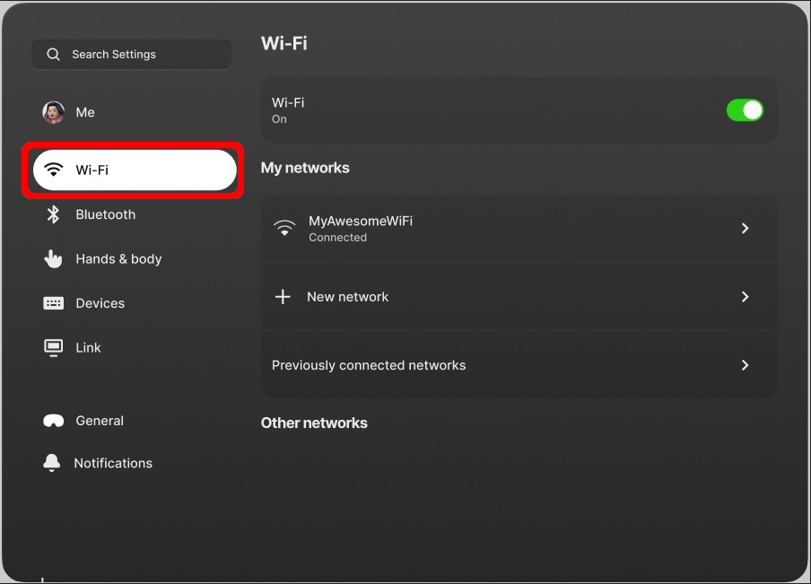
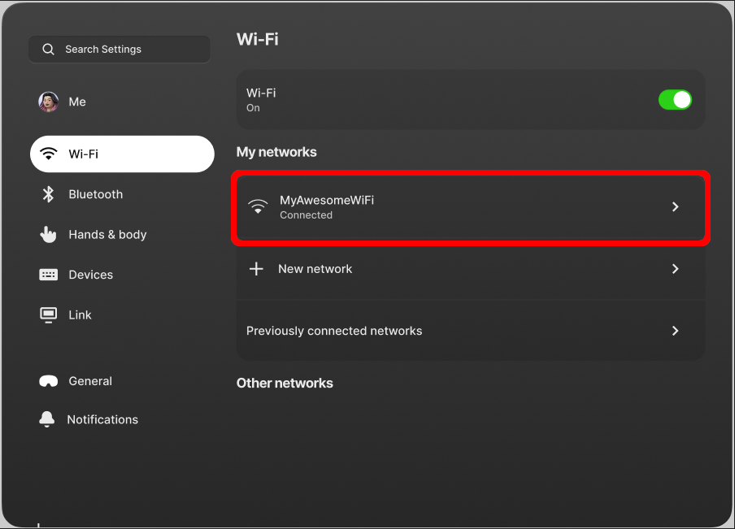
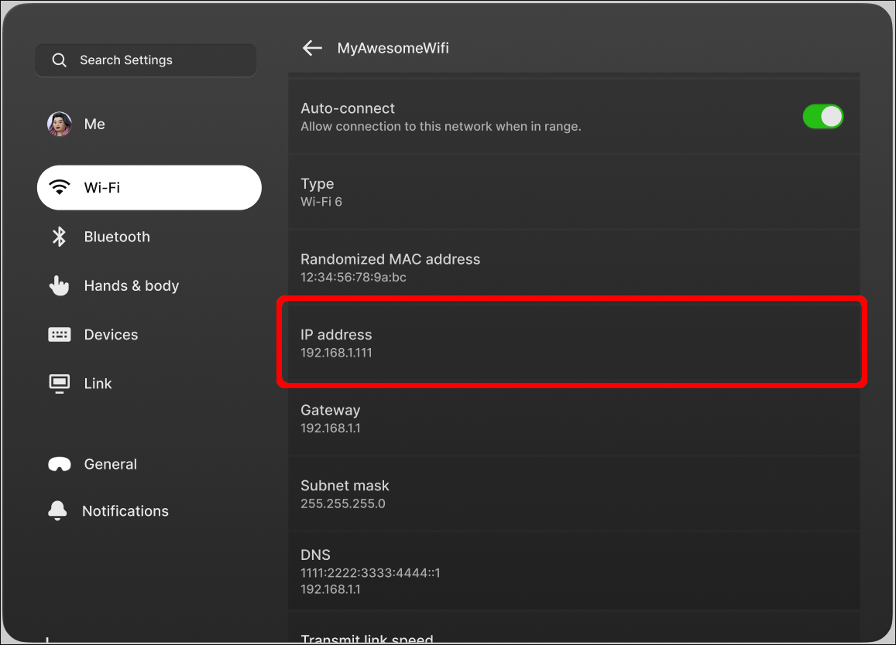
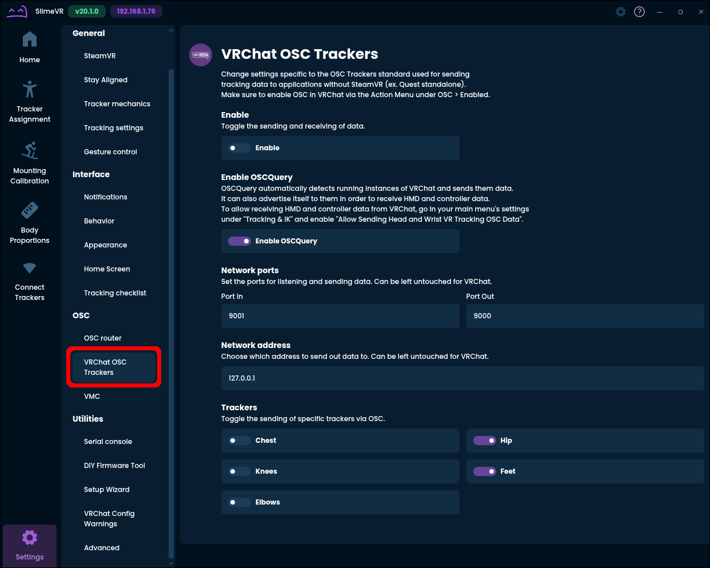
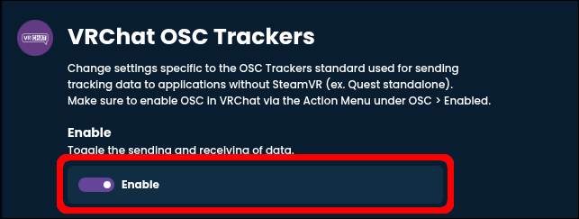
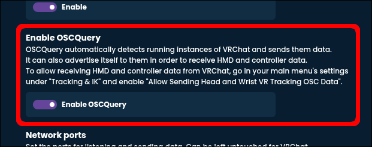
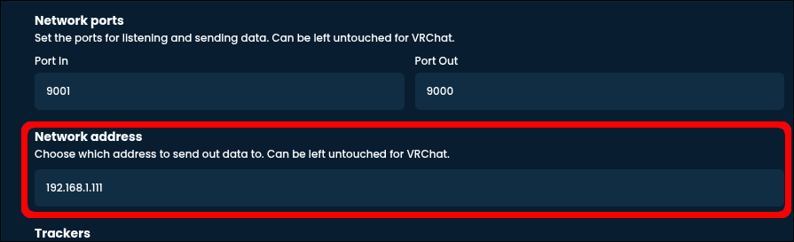
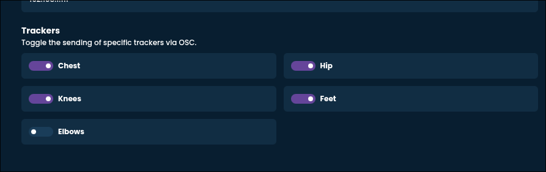
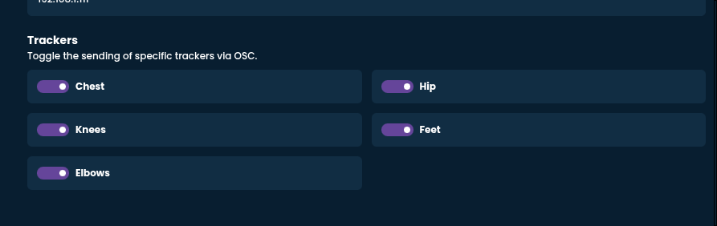
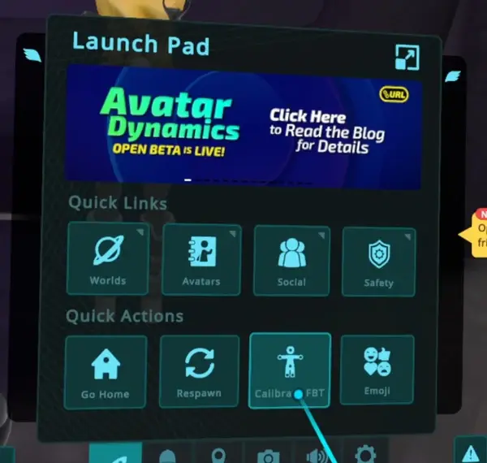

Connecting SlimeVR to Standalone VRChat
This guide assumes that you have already done all the previous steps when it comes to setting up your trackers, namely:
- You unboxed your trackers and checked that you have everything you should.
- You fitted your straps to yourself.
- You installed the SlimeVR server software on your phone or computer.
- You connected your trackers to the SlimeVR server through Wi-Fi.
Step 1: Getting your Quest's IP
You need to tell SlimeVR where on your Wi-Fi network to look for your Quest headset. For this you need its IP address.
Put on your Quest and open up the settings app.
From the available menu options, pick "Wi-Fi".

Find the group labelled "My networks", under it you should find the Wi-Fi network your Quest is connected to. Generally speaking this should be at the very top of the list and should have "Connected" written right under it. Go ahead and click on this item to navigate to your Wi-Fi properties. In this example this is "MyAwesomeWiFi"

In the following menu, you should see a bunch of information listed about your Wi-Fi. Scroll down until you find the one labelled "IP address". The string of numbers and periods under it is your Quest's IP address. I recommend writing this down for the next steps, but of course you can also just remember it. In this example this will be "192.168.1.111".
Below the option for "IP address" are "Gateway" and "Subnet mask". These have the same pattern of digits and periods as the IP, but they are not the same and are not necessary. Make sure you don't accidentally write these down instead of the IP address.

Step 2: SlimeVR Settings
Now that you have your Quest's IP address, go back to the SlimeVR server. We need to make some changes to the settings for it to work.
First, head on over to the settings menu within SlimeVR. On the left side within the list of settings pages, find "VRChat OSC Trackers". This should be under the heading "OSC".
Be careful, the pages titled "OSC router" and "VMC" look very similar to the "VRChat OSC Trackers" one, but they are for entirely different purposes. If you mess with those settings, you might need to undo them later, or your tracking might not work.

First, at the very top, enable VRChat OSC Trackers. This tells SlimeVR to stream your tracking data to VRChat through OSC.

Afterwards, make sure that "Enable OSCQuery" is also turned on. This allows SlimeVR to fetch your headset and controller information for better tracking.

Now it's time to grab the IP address you've written down. By default the text field labelled "Network address" should have the value "127.0.0.1". Replace this with your Quest's IP address.
Right above the option you just changed are a pair of fields called "Port In" and "Port Out". Unless you know exactly what you are doing and why, you should not change these. If you already did, they should be set to "9001" for "Port In", and "9000" for "Port Out".

The last step is to configure the tracking points that will be sent to the Quest. There are 2 possibilities here:
Option 1: You don't have arm trackers. In this case turn on Chest, Hip, Knees, and Feet, and make sure Elbows are turned off.

Option 2: You do have arm trackers. In this case turn on all of the tracking points.

These options aren't referring to what trackers you have, but what joints or body parts should be tracked in VRChat. Even if you don't have feet trackers for example, enabling the feet tracking points is necessary.
Step 3: VRChat
Time to put on your trackers and launch VRChat. If you did everything right, when you open your quick menu, the "Sit/Stand" option should be replaced with "Calibrate".

You can of course click it, calibrate and be off, but you should first make sure that VRChat settings are set correctly
Troubleshooting
I can't access my Wi-Fi settings inside the Quest
If parental protection is turned on for your headset, your parent or guardian might have disabled your access to the Wi-Fi page. Ask them for access.
I did everything correctly, but the "Calibrate" button isn't appearing
That means you did not, in fact, do everything correctly. The main things to check are:
- Did you write down and enter your headset's IP correctly? Are you sure?
- Did you turn on VRChat OSC trackers?
- Did you mess with the ports listed in the SlimeVR settings by accident?
Everything worked before, but all of a sudden it broke
Check your headset's IP again. Your devices can sometimes get different IP addresses assigned to them if they are turned off for an extended period or the router restarts. If this is the case, you can avoid this in the future by assigning a static IP address to your headset, provided you can mess with your router's settings.